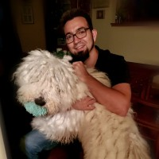

GPU Software Engineer IV
- Investigated platform-agnostic general purpose GPU programming frameworks for use in Meta's AI infrastructure
- Wrote benchmarks to evaluate performance of GEMM kernels in OpenMP, Triton, Cutlass, and Torch
Electrical & Computer Engineer with a flare for graphics, low-level code, and making things fast.

GPU Software Engineer IV
GPU Software Engineer
Algorithm Developer
XR Software Developer
Software Engineering Intern